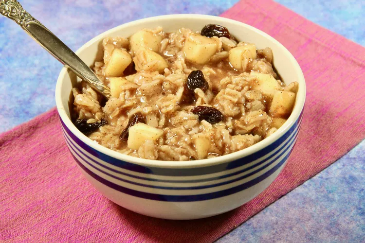

Home
Oatmeal Luck

Description
This recipe takes like 4 minutes, max! I'm usually in a rush,
but this is a clutch morning or midday snack for a sustained energy boost.
It doesn't matter that the fruit is frozen. You're heating the combined ingredients.
Ingredients
- 1/2 Cup Quick Rolled Oats
- 1/4 of Ground Flaxseed
- 1 Cup of Water
- A handful of Frozen Bananas and Strawberries
- A handful of Frozen Blueberries
- A handful of Frozen Peaches
- Cinnamon
- Splash of Vanilla Almond Milk (or preferred milk variation)
Steps
- Measure 1 Cup - or approximately a 2:1 ratio of the
desired measurement of Quick Rolled Oats - of water.
- Bring water to a boil.
- Add oatmeal to boiling water. Stir immediately and add Cinnamon. Lower the
burner setting to allow simmering. Avoid letting the oatmeal dry out too fast.
- Once it starts looking appetizing and edible, add the Frozen Fruit. There should
be more than enough heat at this point.
- Grab a bowl and spoon. Have the ground flaxseed in the bowl ready to go.
- Add the cooked oatmeal to the bowl. Pour in the splash of Vanilla Almond Milk. Stir.
- Eh. That looks good enough. Bon Appetit!